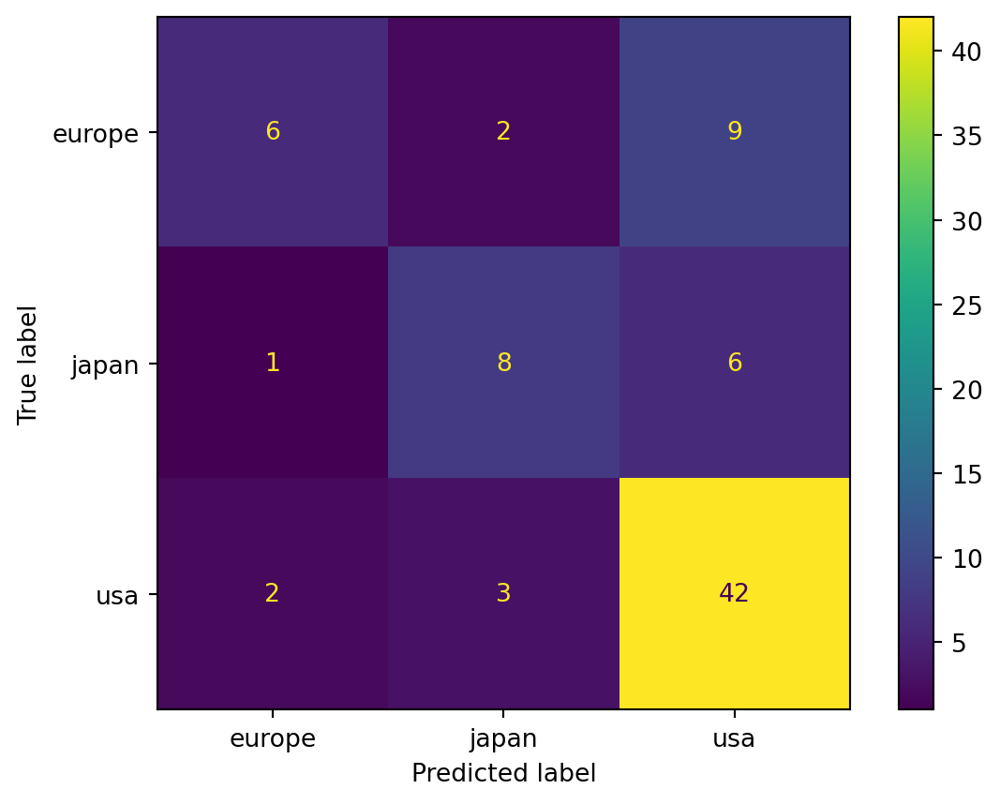
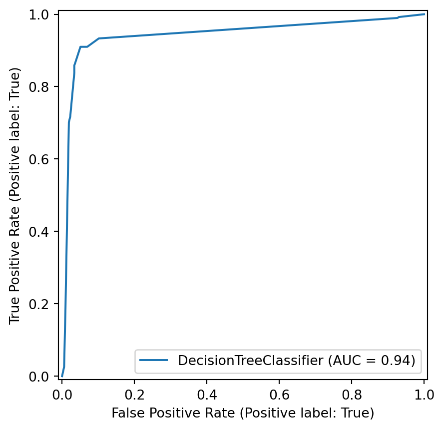
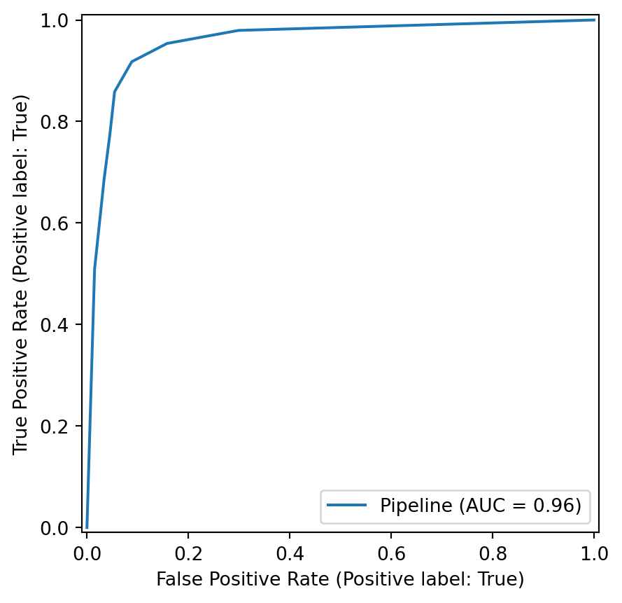

from sklearn import datasets
ds = datasets.load_digits() # loads a well-known dataset
X, digits = ds["data"], ds["target"] # feature matrix and label vector3 Classification
\[ \newcommand{\float}{\mathbb{F}} \newcommand{\real}{\mathbb{R}} \newcommand{\complex}{\mathbb{C}} \newcommand{\nat}{\mathbb{N}} \newcommand{\integer}{\mathbb{Z}} \newcommand{\bfa}{\mathbf{a}} \newcommand{\bfe}{\mathbf{e}} \newcommand{\bfh}{\mathbf{h}} \newcommand{\bfp}{\mathbf{p}} \newcommand{\bfq}{\mathbf{q}} \newcommand{\bfu}{\mathbf{u}} \newcommand{\bfv}{\mathbf{v}} \newcommand{\bfw}{\mathbf{w}} \newcommand{\bfx}{\mathbf{x}} \newcommand{\bfy}{\mathbf{y}} \newcommand{\bfz}{\mathbf{z}} \newcommand{\bfA}{\mathbf{A}} \newcommand{\bfW}{\mathbf{W}} \newcommand{\bfX}{\mathbf{X}} \newcommand{\bfzero}{\boldsymbol{0}} \newcommand{\bfmu}{\boldsymbol{\mu}} \newcommand{\TP}{\text{TP}} \newcommand{\TN}{\text{TN}} \newcommand{\FP}{\text{FP}} \newcommand{\FN}{\text{FN}} \newcommand{\rmn}[2]{\mathbb{R}^{#1 \times #2}} \newcommand{\dd}[2]{\frac{d #1}{d #2}} \newcommand{\pp}[2]{\frac{\partial #1}{\partial #2}} \newcommand{\norm}[1]{\left\lVert \mathstrut #1 \right\rVert} \newcommand{\abs}[1]{\left\lvert \mathstrut #1 \right\rvert} \newcommand{\twonorm}[1]{\norm{#1}_2} \newcommand{\onenorm}[1]{\norm{#1}_1} \newcommand{\infnorm}[1]{\norm{#1}_\infty} \newcommand{\innerprod}[2]{\langle #1,#2 \rangle} \newcommand{\pr}[1]{^{(#1)}} \newcommand{\diag}{\operatorname{diag}} \newcommand{\sign}{\operatorname{sign}} \newcommand{\dist}{\operatorname{dist}} \newcommand{\simil}{\operatorname{sim}} \newcommand{\ee}{\times 10^} \newcommand{\floor}[1]{\lfloor#1\rfloor} \newcommand{\argmin}{\operatorname{argmin}} \newcommand{\E}[1]{\operatorname{\mathbb{E}}\left[\mathstrut #1\right]} \newcommand{\Cov}{\operatorname{Cov}} \newcommand{\logit}{\operatorname{logit}} \]
Machine learning is the use of data to tune algorithms for making decisions or predictions. Unlike deduction based on reasoning from principles governing the application, machine learning is a “black box” that just adapts via training.
We divide machine learning into three major forms:
- Supervised learning
- The training data only examples that include the answer (or label) we expect to get. The goals are to find important effects and/or to predict labels for previously unseen examples.
- Unsupervised learning
- The data is unlabeled, and the goal is to discover structure and relationships inherent to the data set.
- Reinforcement learning
- The data is unlabeled, but there are known rules and goals that can be encouraged through penalties and rewards.
We start with supervised learning, which can be subdivided into two major areas:
- Classification, in which the algorithm is expected to choose from among a finite set of options.
- Regression, in which the algorithm should predict the value of a quantitative variable.
Most algorithms for one of these problems have counterparts in the other.
3.1 Quickstart
The scikit-learn package sklearn is a collection of well-known machine learning algorithms and tools. We use it here to demonstrate a classic classification problem: recognizing handwritten digits.
Example 3.1
The two objects defined in the last line above define the dataset. The value X is called the feature matrix.
print("The feature matrix has shape", X.shape)The feature matrix has shape (1797, 64)In this particular dataset, each row is a vector of 64 pixel intensity values taken from an \(8\times 8\) bitmap of a handwritten digit. Here are the digit images from the first 16 rows, for example:
Code
import matplotlib.pyplot as plt
import numpy as np
import seaborn as sns
def plot_digits(X):
fig, axes = plt.subplots(4,4)
for i in range(4):
for j in range(4):
row = j + 4*i
A = np.reshape(np.array(X[row,:]),(8,8))
sns.heatmap(1-A,ax=axes[i,j],square=True,cmap="gray",cbar=False)
axes[i,j].axis(False)
return None
plot_digits(X)The value digits is the a vector of labels for the digits:
print("There are", len(digits), "labels. Here are the first 16:")
print(digits[:16])There are 1797 labels. Here are the first 16:
[0 1 2 3 4 5 6 7 8 9 0 1 2 3 4 5]Naturally, each sample (pixelized digit) belongs to one of ten classes. We’re going to make this a much easier problem, a classifier that answers the yes/no question, “Is this digit a 6?”
y = (digits == 6)
print("Number of 6s in dataset:", sum(y))Number of 6s in dataset: 181Next, we’ll choose a learning method. Scikit-learn has many predefined classes of learners. Here we create an instance of one that we learn about later in this chapter.
from sklearn.neighbors import KNeighborsClassifier
knn = KNeighborsClassifier(n_neighbors=20) The learner object needs to be supplied with the dataset in order to do the math it needs to figure out how to make predictions. This is called training or, in scikit-learn parlance, fitting the learner.
knn.fit(X, y) KNeighborsClassifier(n_neighbors=20)In a Jupyter environment, please rerun this cell to show the HTML representation or trust the notebook.
On GitHub, the HTML representation is unable to render, please try loading this page with nbviewer.org.
KNeighborsClassifier(n_neighbors=20)
At this point, the classifier object knn has figured out what it needs from the training data. It has methods we can now call to make predictions and evaluate the quality of the results. For example, let’s ask it to make predictions for the first 8 rows of the feature matrix:
yhat = knn.predict(X[:8,:])
print("Predictions for the first 8 digits:")
print(yhat)Predictions for the first 8 digits:
[False False False False False False True False]So far, so good! It’s easy to calculate how frequently the prediction agrees with the true answer in every case:
num_ok = sum(knn.predict(X) == y)
print(f"{num_ok} predicted correctly, or {num_ok/len(y):.2%}.")1795 predicted correctly, or 99.89%.{kind=link}
The standard workflow in scikit-learn is as follows:
flowchart LR
dataset["Get feature matrix
and label vector"]
object["Create learner object"]
train["Fit learner to data"]
predict["Make predictions"]
dataset --> object --> train --> predict
There are two components to a classification dataset: the features and the labels. The features describe the known examples and are what we use to make predictions, while the labels are the correct answers we are trying to predict.
Definition 3.1 A single training example or sample is characterized by a feature vector \(\bfx\) of \(d\) real numbers and a label \(y\) drawn from a finite set \(L\). If \(L\) has only two members (say, “true” and “false”), we have a binary classification problem; otherwise, we have a multiclass problem.
Taken over an entire dataset of \(n\) examples, the labels form a label vector \(\bfy\) and the feature vectors form an \(n\times d\) feature matrix,
\[ \bfX = \begin{bmatrix} \bfx_1 \\ \bfx_2 \\ \vdots \\ \bfx_n \end{bmatrix} = \begin{bmatrix} X_{11} & X_{12} & \cdots & X_{1d} \\ X_{21} & X_{22} & \cdots & X_{2d} \\ \vdots & \vdots && \vdots \\ X_{n1} & X_{n2} & \cdots & X_{nd} \end{bmatrix}. \]
Important
A 2D array or matrix has elements that are addressed by two subscripts. These are always given in order row, column.
In math, we usually start the row and column indexes at 1, but Python starts them at 0.
Each row of the feature matrix is a single feature vector, while each column is the value for a single feature over the entire training set.
Example 3.2 Suppose we want to train an algorithm to predict whether a basketball shot will score. For one shot, we might collect three coordinates to represent the launch point, three to represent the launch velocity, and three to represent the initial angular rotation (axis and magnitude). Thus each shot will require a feature vector of length 9. A collection of 200 sample shots would be encoded as a \(200\times 9\) feature matrix.
3.1.1 One-vs-rest
In Example 3.1 we simplified the problem of recognizing 10 digits by asking the classifier to distinguish only 6 from all the others. This is known as a one-versus-rest strategy. In fact, any multiclass problem can be broken down into separate binary problems using one-versus-rest.
Suppose the label set \(L\) has \(m\) members \(\ell_1, \ell_2, \ldots, \ell_m\). We can define \(m\) binary classification problems by
\[ \begin{align*} \text{Does } y &= \ell_1 \text{ or not?} \\ \text{Does } y &= \ell_2 \text{ or not?} \\ \vdots \\ \text{Does } y &= \ell_m \text{ or not?} \end{align*} \]
Answering all \(m\) of these questions gives us the full classification.
3.1.2 Qualitative features
We have defined the features of a training example as numerical values. What should we do with qualitative data? We could arbitrarily assign numbers to possible values, such as “0=red”, “1=blue”, “2=yellow,” and so on. But this is not ideal: most of the time, we would not want to say that yellow is twice as far from red as it is from blue!
A better strategy is to use the one-hot or dummy encoding. If a particular feature can take on \(k\) unique values, then we introduce \(k\) new features indicating which value is present. (We can use \(k-1\) dummy features if we interpret all-zeros to mean the \(k\)th possibility.)
3.2 Classifier performance
Before we start discussing classification algorithms, we need to understand how to evaluate the performance of a classifier. The most straightforward take would be to calculate how often the classifier is correct on the data used to train it, like we did in Example 3.1. But there are some important reasons why this is not a good idea.
3.2.1 Generalization
Consider the following classification algorithm: To make a prediction, see if the input matches one of the samples in the training set. If so, return the correct label; otherwise, predict randomly. This algorithm would have perfect accuracy on the training set, but it would be useless for any new data—which is the entire point of training a classifier!
Definition 3.2 The performance of a predictor on previously unseen data is known as the generalization of the predictor.
{kind=link}
In order to gauge generalization, we should hold back some of the original labeled data from training and use it only to test the performance. That is, we split the dataset into nonoverlapping training and testing sets. Only the training set is fit by the classifier, while the testing set is used to evaluate its performance.
Example 3.3 Here is a cleaned-up version of the Lending Tree loan applications dataset.
import pandas as pd
loans = pd.read_csv("_datasets/loan_clean.csv")
loans.head()| loan_amnt | int_rate | installment | annual_inc | dti | delinq_2yrs | delinq_amnt | percent_funded | |
|---|---|---|---|---|---|---|---|---|
| 0 | 5000 | 10.65 | 162.87 | 24000.0 | 27.65 | 0 | 0 | 100.0 |
| 1 | 2500 | 15.27 | 59.83 | 30000.0 | 1.00 | 0 | 0 | 100.0 |
| 2 | 2400 | 15.96 | 84.33 | 12252.0 | 8.72 | 0 | 0 | 100.0 |
| 3 | 10000 | 13.49 | 339.31 | 49200.0 | 20.00 | 0 | 0 | 100.0 |
| 4 | 3000 | 12.69 | 67.79 | 80000.0 | 17.94 | 0 | 0 | 100.0 |
We formulate a binary classification problem by labelling whether each loan was at least 95% funded. The other columns of the frame will form the features for the predictions.
y = loans["percent_funded"] > 95
X = loans.drop("percent_funded", axis=1)
print("There are", len(y), "samples having", len(X.columns), "features.")There are 39717 samples having 7 features.The helper function called train_test_split allows us to split off a stated proportion of the data to use for testing.
Tip
It’s usually recommended to shuffle the order of the samples before the train–test split. In order to make the results fully reproducible, give a specific random seed to the RNG used for that shuffle.
from sklearn.model_selection import train_test_split
X_train, X_test, y_train, y_test = train_test_split(
X, y,
test_size=0.2, # testing fraction
shuffle=True,
random_state=302
)
print("There are", len(X_train), "training samples.")
print("There are", len(X_test), "testing samples.")There are 31773 training samples.
There are 7944 testing samples.We can check that the test and train labels have similar characteristics:
import pandas as pd
print("fraction of True in the training set:")
print( f"{y_train.mean():.2%}" )
print("\nfraction of True in the testing set:")
print( f"{y_test.mean():.2%}" )fraction of True in the training set:
95.48%
fraction of True in the testing set:
95.52%{kind=link}
3.2.2 Metrics for binary classifiers
A binary classifier is one that produces just two unique labels, which we can call yes and no, positive and negative, or True and False. The accuracy of the classifier is the proportion of correct predictions made on the test set.
Example 3.4 Continuing with Example 3.3, we can now train a classifier on the training data and test it on the testing data.
knn = KNeighborsClassifier(n_neighbors=9)
knn.fit(X_train, y_train) # fit only to training set
yhat_test = knn.predict(X_test) # predict on test set
acc = (yhat_test == y_test).mean()
print(f"test accuracy is {acc:.2%}")test accuracy is 95.67%Actually, every learner object has a score method that computes a default metric. For binary classifiers, that metric is accuracy:
acc = knn.score(X_test, y_test) # score only on test set
print(f"test accuracy is {acc:.2%}")test accuracy is 95.67%That number seems comfortingly close to 100%. But consider a rather silly classifier that predicts “yes” for every loan application:
yhat_test = [True]*len(X_test) # predict all True
acc = (yhat_test == y_test).mean()
print(f"test accuracy is {acc:.2%}")test accuracy is 95.52%Our real classifier is barely better than this!
Example 3.4 demonstrates that accuracy alone may not capture anything useful about a classifier. In that case, it happened that a huge fraction of the loans were actually funded, so the “predict True always” classifier scored amazingly well. Presumably, though, approving loans for the small fraction of applicants who should not get them could lead to big financial losses. The possibilities for comparing a prediction with the correct value, or ground truth, can be diagrammed in a 2x2 table, as illustrated in Figure 3.1.
The notations in the figure are as follows:
- True positive (TP): Predicts positive, actually is positive
- False positive (FP): Predicts positive, actually is negative
- True negative (TN): Predicts negative, actually is negative
- False negative (FN): Predicts negative, actually is positive
When the counts of these four cases over the testing set are put into such a table, we call it a confusion matrix. Based on these counts, we can define several metrics that give a nuanced view of the classifier’s performance.
Definition 3.3 The following primary metrics are defined for a binary classifier:
| accuracy | \(\quad \dfrac{\TP + \TN}{\TP + \FP + \TN + \FN}\) |
| recall | \(\dfrac{\TP}{\TP + \FN}\) |
| specificity | \(\dfrac{\TN}{\TN + \FP}\) |
| precision | \(\dfrac{\TP}{\TP + \FP}\) |
All of the primary metrics vary between 0 (worst) and 1 (best).
- accuracy
- How often are the predictions correct? This is the most intuitive metric, but it can be misleading if the classes are imbalanced.
- recall
- How often are actual positive cases predicted correctly? This is also called sensitivity or the true positive rate. It sets the goal as minimizing false negatives.
- specificity
- How often are actual negative cases predicted correctly? This is also called the true negative rate. It sets the goal as minimizing false positives.
- precision
- How often are the positive predictions correct? This is also called positive predictive value. Like specificity, it sets the goal as minimizing false positives, but measures it differently.
Note
Specificity is equal to recall of the negative class. For that reason, sklearn provides a recall_score but not a specificity_score function, and you have to use a logical NOT with recall_score to get the specificity.
Example 3.5 Here is a confusion matrix for a hypothetical test for COVID-19 antigens applied to 100 samples:
| Predicted \(-\) | Predicted \(+\) | |
| Actually \(-\) | 62 | 12 |
| Actually \(+\) | 4 | 22 |
From this we see that the accuracy is \(84/100\), or 84%. Out of 26 samples that had the antigen, the test identified 22, for a recall of \(22/26=84.6\)%. Out of 74 samples that did not have the antigen, 62 were predicted correctly, for a specificity of \(62/74=83.8\)%. Finally, the precision is \(22/34=64.7\)%.
(ordering of +/- is different in the video)

Tip
As you can see from Definition 3.3, recall and specificity switch places if we swap the roles of positive and negative. In other words, specificity is equal to recall of the negative class.
The metrics to pay attention to depend on the context and application. For a pregnancy test, for example, the health consequences of a false negative might be substantial, so the manufacturer might prioritize a high recall rate. But a risk-averse loan officer would be most concerned about making loans to those who end up defaulting, i.e. a low false positive rate, and therefore seek a high precision.
There are also a few ways to combine the primary metrics in order to account for two at once.
Definition 3.4 The \(\mathbf{F_1}\) score is the harmonic mean of the precision and the recall, i.e., \[ F_1 = \left[ \frac{1}{2} \left(\frac{1}{\text{precision}} + \frac{1}{\text{recall}} \right) \right]^{-1} = \frac{2\TP}{2\TP+\FN+\FP}. \]
The balanced accuracy is the arithmetic mean of recall and specificity.
Like the primary metrics, \(F_1\) and balanced accuracy range between 0 (worst) and 1 (best).
Note
The harmonic mean is small if either of its terms is small, so a high \(F_1\) means both precision and recall are good.
Tip
The sklearn.metrics module provides scoring functions for the metrics defined in this section. They all take the ground-truth labels and the predicted labels as arguments.
Example 3.6 Continuing with the loan classifier trained in Example 3.4, we can find its confusion matrix:
from sklearn.metrics import confusion_matrix, ConfusionMatrixDisplay
yhat = knn.predict(X_test)
C = confusion_matrix(y_test, yhat, labels=[True, False])
lbl = ["fund", "reject"]
ConfusionMatrixDisplay(C, display_labels=lbl).plot();
Caution
It’s advisable to always call confusion_matrix with the labels argument, in order to control the interpretation of the matrix. In particular, False < True, so the default for Boolean labels is to count the upper left corner of the matrix as “true negatives,” assuming that False represents a negative result.
Hence, there are 7570 true positives. The accuracy is
print( f"accuracy = {(7570 + 26) / np.sum(C):.1%}" )accuracy = 95.6%In practice, we can just ask the classifier for its score, which defaults to accuracy:
print( knn.score(X_test, y_test) )0.9566968781470292In sklearn.metrics there are functions to compute recall and precision without reference to the confusion matrix. You must put the ground-truth labels before the predicted labels, and you should also specify which label value corresponds to a “positive” result.
from sklearn.metrics import precision_score, recall_score
recall = recall_score(y_test, yhat, pos_label=True)
precision = precision_score(y_test, yhat, pos_label=True)
specificity = recall_score(y_test, yhat, pos_label=False)
print(f"recall is {recall:.1%}, precision is {precision:.1%}, and specificity is {specificity:.1%}")recall is 100.0%, precision is 95.7%, and specificity is 4.2%There are also functions for the composite scores defined in Definition 3.4:
from sklearn.metrics import f1_score, balanced_accuracy_score
print( f"F1 = {f1_score(y_test, yhat):.1%}" )
print( f"balanced accuracy = {balanced_accuracy_score(y_test, yhat):.1%}" )F1 = 97.8%
balanced accuracy = 52.1%The loan classifier has excellent recall, respectable precision, and terrible specificity, resulting in a good F₁ score and a mediocre balanced accuracy score.
Example 3.7 If \(k\) of the \(n\) testing samples were funded loans, then the fund-them-all loan classifier has
\[ \TP = k,\, \TN = 0,\, \FP = n-k,\, \FN = 0. \]
Its F₁ score is thus
\[ \frac{2\TP}{2\TP+\FN+\FP} = \frac{2k}{2k+n-k} = \frac{2k}{k+n}. \]
If the fraction of funded samples in the test set is \(k/n=a\), then the accuracy of this classifier is \(a\). Its F₁ score is \(2a/(1+a)\), which is larger than \(a\) unless \(a=1\). That’s because the true positives greatly outweigh the other confusion matrix values.
The balanced accuracy is
\[ \frac{1}{2} \left(\frac{\TP}{\TP+\FN} + \frac{\TN}{\TN+\FP} \right) = \frac{1}{2}, \]
independently of \(a\). This quantity is sensitive to the low specificity.
3.2.3 Multiclass classifiers
When there are more than two unique possible labels, these metrics can be applied using the one-vs-rest paradigm. For \(K\) unique labels, this paradigm poses \(K\) binary questions: “Is it in class 1, or not?”, “Is it in class 2, or not?”, etc. The confusion matrix becomes \(K\times K\).
Example 3.8 Suppose we design a classifier to predict the composer of a section of classical music. Here is a hypothetical confusion matrix for a test set of 82 samples:
If we look down the middle column, for example, we see all the cases where the classifier predicted Mozart. In 18 of those cases, that was the correct label, which we call the true positives for finding Mozart vs. the rest. There were also another \(5+2=7\) cases that were labeled Mozart that were actually someone else, and we call those the false positives. The precision score for Mozart is thus \(18/(18+7)\), or 72%.
We could instead look at the bottom row, which tells us that out of 26 cases where the true label is Schubert, the classifier correctly predicted (true positives) 20 of them, missing (false negatives) on the other 6. The recall score for Schubert is thus \(20/26\), or about 77%.
{kind=link}
Example 3.9 We load a dataset on the characteristics of cars and use quantitative factors to predict the region of origin:
import seaborn as sns
cars = sns.load_dataset("mpg").dropna()
cars.head()| mpg | cylinders | displacement | horsepower | weight | acceleration | model_year | origin | name | |
|---|---|---|---|---|---|---|---|---|---|
| 0 | 18.0 | 8 | 307.0 | 130.0 | 3504 | 12.0 | 70 | usa | chevrolet chevelle malibu |
| 1 | 15.0 | 8 | 350.0 | 165.0 | 3693 | 11.5 | 70 | usa | buick skylark 320 |
| 2 | 18.0 | 8 | 318.0 | 150.0 | 3436 | 11.0 | 70 | usa | plymouth satellite |
| 3 | 16.0 | 8 | 304.0 | 150.0 | 3433 | 12.0 | 70 | usa | amc rebel sst |
| 4 | 17.0 | 8 | 302.0 | 140.0 | 3449 | 10.5 | 70 | usa | ford torino |
Now we extract the quantitative features and labels:
features = ["cylinders", "horsepower", "weight", "acceleration", "mpg"]
X = cars[features]
y = cars["origin"]
print(X.shape[0], "samples and", X.shape[1], "features")392 samples and 5 featuresNext, we split into training and testing subsets:
X_train, X_test, y_train, y_test = train_test_split(
X, y,
test_size=0.2,
shuffle=True,
random_state=19716
)Now we perform the fit and measure the accuracy:
knn = KNeighborsClassifier(n_neighbors=8)
knn.fit(X_train, y_train)
yhat = knn.predict(X_test)
from sklearn.metrics import accuracy_score
print(f"accuracy is {accuracy_score(y_test, yhat):.1%}")
print(f"balanced accuracy is {balanced_accuracy_score(y_test, yhat):.1%}")accuracy is 70.9%
balanced accuracy is 59.3%Here is the confusion matrix:
labels = knn.classes_
C = confusion_matrix(y_test, yhat, labels=labels)
ConfusionMatrixDisplay(C, display_labels=labels).plot();
We also get \(K\) versions of the usual metrics. In order to use functions like recall_score, f1_score, and so on, we have to specify an averaging method. The keyword average=None gives the individual scores of the classes:
pd.DataFrame({
"Precision" : precision_score(y_test, yhat, average=None),
"Recall" : recall_score(y_test, yhat, average=None),
"F1 score" : f1_score(y_test, yhat, average=None),
}, index=labels)| Precision | Recall | F1 score | |
|---|---|---|---|
| europe | 0.666667 | 0.352941 | 0.461538 |
| japan | 0.615385 | 0.533333 | 0.571429 |
| usa | 0.736842 | 0.893617 | 0.807692 |
To get a single composite score for a metric, you have to give a valid average method, such as "macro" or "weighted". These are described in the scikit-learn documentation.
print(f'macro avg: {precision_score(y_test, yhat, average="macro"):.1%}')
print(f'weighted avg: {precision_score(y_test, yhat, average="weighted"):.1%}')macro avg: 67.3%
weighted avg: 69.9%{kind=link}
It’s time to update our scikit-learn workflow:
flowchart TD
dataset["Get feature matrix and label vector"]
split["Split into training and testing sets
train_test_split()"]
object["Create learner object"]
train["Fit learner to data
.fit()"]
predict["Make predictions
.predict()"]
evaluate["Compute metrics
.confusion_matrix(), .score(), recall_score(), etc."]
dataset --> split --> object --> train --> predict
train --> evaluate
3.3 Decision trees
A decision tree is much like playing Twenty Questions. A question is asked, and the answer reduces the possible results, leading to a new question.
The fundamental step is: given feature vectors \(\bfx_1,\ldots,\bfx_n\) with labels \(y_1,\ldots,y_n\), partition the samples into two subsets, each of which has as uniform as set of labels as possible. That step is then repeated recursively on the two subsets just formed by the partition, and so on. The result is a binary tree, as illustrated in Figure 3.2.
flowchart TD
root[Is y < 2?]
l[Is x < 0?]
root-- Yes -->l
r([leaf A])
root-->|No|r
ll([leaf B])
l-->|Yes|ll
lr([leaf C])
l-->|No|lr
When a prediction is required, we apply the same criteria as the splits in our tree, and when we reach a leaf of the tree (i.e., no further subdivisions), we take a vote of all the samples in the leaf subset to determine the label.
Example 3.10 In Figure 3.2, suppose that leaf A contains [H,T,T], leaf B contains [H], and leaf C contains [H,H,T]. The query \((x,y)=(1,0)\) first goes left (since \(0 <2\)) and then right (since \(1\not< 0\)), landing in leaf C. The prediction for this query is then “H”.
There are two crucial details that still need to be specified: how to split samples into subsets, and how to determine the uniformity of labels within each subset. The answer to the first issue was hinted at in Figure 3.2: each split is defined by a cutoff value for one of the features. Addressing the second issue is more complicated.
3.3.1 Gini impurity
In thinking about how to determine the uniformity of a set of samples, it helps to start with the extreme cases. Consider a binary classification problem. If all the samples in a set have the same label, then we say the set is maximally pure; the decision for any query landing here is clear. At the other end, a set that has an equal number of samples from each class. This set is maximally impure, because the decision for any query landing here is essentially a coin toss.
The following is one way to quantify the notion of impurity that matches these two extremes.
Definition 3.5 Suppose the samples have \(K\) labels. Given a sample set \(S\), for each \(k=1,\ldots,K\) let \(p_k\) be the fraction of samples in \(S\) that have label \(k\). Then the Gini impurity of \(S\) is defined as \[ H(S) = \sum_{k=1}^K p_k(1-p_k). \tag{3.1}\]
In the special case of binary classification in which \(K=2\), this simplifies to
\[ H(S) = 2p(1-p), \tag{3.2}\]
where \(p\) is the fraction of samples in \(S\) that have a positive label.
Consider our two extreme binary cases from above. First, if all the samples in \(S\) have the same label, then either \(p=1\) or \(p=0\) in Equation 3.2, so \(H(S)=0\). On the other hand, if there are two labels equally present, then \(p=\tfrac{1}{2}\), and \(H(S)=\tfrac{1}{2}\) as well.
Example 3.11 Suppose set \(S\) has equal numbers of members having class 1, class 2, etc., up to class \(K\). Then for every \(k=1,\ldots,K,\) \(p_k=1/K\), and
\[ \begin{split} H(S) &= \sum_{k=1}^K p_k(1-p_k)\\ &= \sum_{k=1}^K \frac{1}{K}\left(1-\frac{1}{K}\right)\\ &= \frac{1}{K}\cdot \frac{K-1}{K} \cdot\sum_{k=1}^K 1 \\ &= \frac{K-1}{K}. \end{split} \]
For \(K=2\), this is \(\tfrac{1}{2}\), as we deduced above. In the limit \(K\to \infty\), \(H(S)\) approaches 1 from below.
Example 3.12 Suppose a set \(S\) has \(n\) members with label A, 1 member with label B, and 1 member with label C. What is the Gini impurity of \(S\)?
Solution. We have \(p_A=n/(n+2)\), \(p_B=p_C=1/(n+2)\). Hence
\[ \begin{split} H(S) &= \frac{n}{n+2}\left( 1 - \frac{n}{n+2} \right) + 2 \frac{1}{n+2}\left( 1 - \frac{1}{n+2} \right) \\ &= \frac{n}{n+2}\frac{2}{n+2} + \frac{2}{n+2}\frac{n+1}{n+2} \\ &= \frac{4n+2}{(n+2)^2}. \end{split} \]
This value is \(\tfrac{1}{2}\) for \(n=0\) and approaches zero as \(n\to\infty\).
There are alternatives to the Gini impurity score, but we won’t go into the details.
3.3.2 Partitioning
Suppose we start with a sample set \(S\) that we partition into disjoint (i.e., nonoverlapping) subsets \(S_L\) and \(S_R\). We want to assign a total impurity to the partitioning so that we can compare different scenarios.
One pitfall we should avoid is to put just one sample into \(S_L\) and all the rest into \(S_R\), which would make \(H(S_L)=0\) automatically. That logic would lead us to put every sample into its own leaf, which is not only potentially inefficient but has other drawbacks we will learn about later. So we will choose a formula that rewards more evenly divided subsets.
Definition 3.6 The total impurity of the partition \((S_L,S_R)\) is
\[ Q(S_L,S_R) = \lvert S_L\rvert\, H(S_L) + \lvert S_R \rvert \, H(S_R), \tag{3.3}\]
where \(H\) is Gini impurity and \(|S_L|\) and \(|S_R|\) are the number of samples in \(S_L\) and \(S_R\), respectively.
If \(S_L\) and \(S_R\) are both pure subsets, then \(Q(S_L,S_R)=0\). Otherwise, Equation 3.3 favors equally sized subsets as well as low impurity within the subsets.
Our goal is to choose a partition that minimizes \(Q\). It would be far too slow to look at all possible partitions, so we look only among those that are based on a single feature and a threshold value.
Note
The decision tree algorithm is a so-called greedy algorithm: it makes the best choice at each step without trying to look into the future.
Example 3.13 Suppose we have \(d=1\) feature and are given the four samples \((x_i,y_i) = \{ (0,A), (1,B), (2,A), (3,B) \}\). What is the optimal partition?
Solution. We can partition into two pieces based on a threshold value \(\theta\): \(\{x \le \theta\}\) and \(\{x > \theta\}\). But there are really only 5 unique cases.
| \(\theta\) | Left | Right | \(Q\) |
|---|---|---|---|
| \(< 0\) | \(\varnothing\), \(H=0\) | \([A, B, A, B]\), \(H=\tfrac{1}{2}\cdot \tfrac{1}{2} + \tfrac{1}{2}\cdot \tfrac{1}{2} =\tfrac{1}{2}\) | \(0\cdot 0 + 4\cdot \tfrac{1}{2} = 2\) |
| \([0,1)\) | \([A]\), \(H=0\) | \([B, A, B]\), \(H=\tfrac{2}{3}\cdot \tfrac{1}{3} + \tfrac{1}{3}\cdot \tfrac{2}{3} =\tfrac{4}{9}\) | \(1 \cdot 0 + 3 \cdot\tfrac{4}{9} = \tfrac{4}{3}\) |
| \([1,2)\) | \([A, B]\), \(H=\tfrac{1}{2}\cdot \tfrac{1}{2} + \tfrac{1}{2}\cdot \tfrac{1}{2} =\tfrac{1}{2}\) | \([A, B]\), \(H=\tfrac{1}{2}\) | \(2 \cdot \tfrac{1}{2} + 2 \cdot\tfrac{1}{2} = 2\) |
| \([2,3)\) | \([A,B,A]\), \(H=\tfrac{2}{3}\cdot \tfrac{1}{3} + \tfrac{1}{3}\cdot \tfrac{2}{3} =\tfrac{4}{9}\) | \([B]\), \(H=0\) | \(3 \cdot\tfrac{4}{9} + 1\cdot 0= \tfrac{4}{3}\) |
| \(\ge 3\) | \([A, B, A, B]\), \(H=\tfrac{1}{2}\cdot \tfrac{1}{2} + \tfrac{1}{2}\cdot \tfrac{1}{2} =\tfrac{1}{2}\) | \(\varnothing\), \(H=0\) | \(4\cdot \tfrac{1}{2} + 0\cdot 0 = 2\) |
Both \(\{ (0,A) \}, \{ (1,B), (2,A), (3,B) \}\) and \(\{ (0,A), (1,B), (2,A) \}, \{ (3,B) \}\) are equally optimal partitionings, with \(Q=4/3\).

Finally, once we have found the split that minimizes \(Q(S_L,S_R)\), we need to check whether it is an improvement—that is, whether
\[ Q(S_L,S_R) + \alpha < Q(S,\varnothing) = |S| H(S), \]
where \(\alpha \ge 0\) is a number that ensures a certain minimum amount of decrease. If the condition is not satisfied, then \(S\) is not split and becomes a leaf of the decision tree. If so, then we add this split to the binary tree and recursively check both \(S_L\) and \(S_R\) for partitioning.
3.3.3 Decision boundary
One way to think about a classifier is that it divides all of feature space into zones belonging to the different classes. The boundary between two zones is the set of points where the classifier is indifferent between the two classes; together, the boundary points form the decision boundary.
For a decision tree, the decision boundary is piecewise perpendicular to the feature axes, as illustrated in this animation:
Initially, when the tree has a depth of 1, all of feature space is divided into two zones. At each new depth the tree is able to add more zones, and the decision boundary gradually becomes more complex.
3.3.4 Usage and interpretation
In naive form, the decision tree construction continues to find partitions until every leaf in the tree represents a pure subset. In practice, we usually set a limit on the depth of the tree, which is the maximum number of partitions it takes to start from the root and reach any leaf. This obviously puts an upper limit on the computational time, but it is also desirable for other reasons we will explore in the next chapter.
Example 3.14 We create a toy dataset with 20 random points in the plane, with two subsets of 10 that are shifted left/right a bit. The details are not important. For simplicity, the feature values (coordinates) are rounded to integers.
Code
import numpy as np
import pandas as pd
from numpy.random import default_rng
import matplotlib.pyplot as plt
rng = default_rng(19716)
gp1 = rng.random((10,2))
gp1[:,0] -= 0.1
gp2 = rng.random((10,2))
gp2[:,0] += 0.1
X = np.round(10*np.vstack((gp1,gp2)))
y = np.hstack(([1]*10,[2]*10))
import seaborn as sns
df = pd.DataFrame( {"x₁":X[:,0], "x₂":X[:,1], "y":y} )
sns.scatterplot(data=df, x="x₁", y="x₂", hue="y", palette=["red", "blue"]);
plt.grid(True)
plt.axis("equal") # This adds grid lines to both x and y axes
plt.show()Now we create and fit a decision tree for these samples:
from sklearn.tree import DecisionTreeClassifier, plot_tree
tree = DecisionTreeClassifier(max_depth=3)
tree.fit(X, y)DecisionTreeClassifier(max_depth=3)In a Jupyter environment, please rerun this cell to show the HTML representation or trust the notebook.
On GitHub, the HTML representation is unable to render, please try loading this page with nbviewer.org.
DecisionTreeClassifier(max_depth=3)
At this point, the tree object has created and stored all the information derived from the dataset that defines the decision tree. Since this is a small tree, we can easily look under the hood:
Code
from matplotlib.pyplot import figure
figure(figsize=(6,8), dpi=200)
plot_tree(tree, feature_names=["x₁", "x₂"]);The root of the tree at the top shows that the best initial split was found at the vertical line \(x_1=1.5\). To the left of that line is are 4 red points, for a Gini value of zero. Therefore, in any future query having \(x_1 \le 1.5\), the tree will return the red label.
The other branch from the root draws another vertical line, this time at \(x_1 = 7.5\). This captures 7 blue points, another pure subset. Finally, the rightmost branch draws a horizontal line at \(x_2=7.5\), which peels off a pure subset of 2 blue points. The tree has now reached a depth of 3, which is the upper limit we set at the time the tree object was created.
Notice that the bottom left leaf has a nonzero Gini impurity. If a prediction ends up here, then the classifier returns the red label, since red examples outnumber the blues by 6 to 1.
Example 3.15 We return to the penguins and fit a decision tree to the quantitative features. In order to assess the effectiveness of the tree, we use the train–test paradigm.
import pandas as pd
from sklearn.model_selection import train_test_split
from sklearn.metrics import *
penguins = sns.load_dataset("penguins")
penguins = penguins.dropna()
features = [
"bill_length_mm",
"bill_depth_mm",
"flipper_length_mm",
"body_mass_g"
]
X = penguins[features]
y = penguins["species"]
dtree = DecisionTreeClassifier(max_depth=4)
X_train, X_test, y_train, y_test = train_test_split(
X, y,
test_size=0.2,
shuffle=True,
random_state=19716
)
dtree.fit(X_train, y_train)DecisionTreeClassifier(max_depth=4)In a Jupyter environment, please rerun this cell to show the HTML representation or trust the notebook.
On GitHub, the HTML representation is unable to render, please try loading this page with nbviewer.org.
DecisionTreeClassifier(max_depth=4)
Now we can evaluate the performance of the tree:
yhat = dtree.predict(X_test)
print("Confusion matrix:")
print( confusion_matrix(
y_test, yhat,
labels=["Adelie", "Chinstrap", "Gentoo"]
) )Confusion matrix:
[[28 3 0]
[ 1 10 0]
[ 0 0 25]]The performance is quite good, although the Chinstrap case is hindered by the relatively low number of training examples:
y_train.value_counts()species
Adelie 115
Gentoo 94
Chinstrap 57
Name: count, dtype: int64Because we can follow a decision tree’s logic step by step, we say it is highly interpretable. The transparency of the prediction algorithm is an attractive aspect of decision trees, although this advantage weakens as the power of the tree is increased to handle difficult datasets.
Example 3.16 We get some interesting information from looking at the top levels of the decision tree from Example 3.15:
Code
from matplotlib.pyplot import figure
figure(figsize=(8,4), dpi=200)
plot_tree(dtree, max_depth=2, feature_names=features);The most determinative feature for identifying the species is apparently the flipper length. If it exceeds 206.5 mm, then the penguin is rather likely to be a Gentoo.
Each time we partition a subset, we choose one feature and get an improvement in total purity. By adding these improvements per feature over the entire tree, we get an idea of how important each feature was to the overall impurity reduction, creating a ranking known as Gini importance.
GIs = dtree.feature_importances_
pd.Series(GIs, index=features).sort_values(ascending=False)flipper_length_mm 0.517495
bill_length_mm 0.373336
bill_depth_mm 0.092135
body_mass_g 0.017034
dtype: float64From above we see that flipper length alone accounts for about half of the resolving power of the tree, followed in importance by the bill length. The other measurements apparently have little discriminative value.
{kind=link}
3.4 Nearest neighbors
The next learner type is conceptually simple: given a point in feature space to classify, survey the nearest known examples and choose the most frequently occurring class. This is called the \(k\) nearest neighbors (kNN or \(k\)-NN) algorithm, where \(k\) is the number of neighboring examples to survey.
3.4.1 Distances and norms
The existence of “closest” examples means that we need to define a notion of distance in feature spaces of any dimension. Let \(\real^d\) be the space of vectors with \(d\) real components, and let \(\bfzero\) be the vector of all zeros.
Definition 3.7 A distance metric is a function \(\dist\) on pairs of vectors that satisfies the following properties for all vectors \(\bfu\), \(\bfv\), and \(\bfz\):
- \(\dist(\bfu,\bfv) \ge 0\),
- \(\dist(\bfu,\bfv)=0\) if and only if \(\bfu=\bfv\),
- \(\dist(\bfu,\bfv) = \dist(\bfv,\bfu)\), and
- \(\dist(\bfu,\bfv) \le \dist(\bfu,\bfz) + \dist(\bfz,\bfv)\), known as the triangle inequality.
These are considered the essential properties desired of a distance metric. The most common way to define a distance metric is by using a function on vectors known as a norm.
Definition 3.8 For any vector \(\bfu \in \real^d\), we define the following norms.
The 2-norm or Euclidean norm: \[ \twonorm{\bfu} = \bigl(u_1^2 + u_2^2 + \cdots + u_d^2\bigr)^{1/2}. \]
The 1-norm or Manhattan norm: \[ \onenorm{\bfu} = |u_1| + |u_2| + \cdots + |u_d|. \]
The \(\infty\)-norm, max norm, or Chebyshev norm: \[ \infnorm{\bfu} = \max_{1\le i \le d} \abs{u_i}. \]
Here is the key connection.
Theorem 3.1 Given a vector norm \(\norm{\cdot}\), the function
\[ \dist(\bfu,\bfv) = \norm{\bfu - \bfv} \tag{3.4}\]
defines a distance metric.
Example 3.17 Given \(\bfu=[-1,1,0,4]\) and \(\bfv=[-2,1,2,2]\), find the distance between them using all three common vector norms.
Solution. We first calculate \(\bfu - \bfv = [1,0,-2,2]\). Then
\[ \begin{split} \twonorm{\bfu-\bfv} &= \bigl( 1^2 + 0^2 + 2^2 + 2^2 \bigr)^{1/2} = \sqrt{9} = 3, \\[1ex] \onenorm{\bfu-\bfv} &= 1 + 0 + 2 + 2 = 5, \\[1ex] \infnorm{\bfu-\bfv} &= \max\{ 1, 0, 2, 2 \} = 2. \end{split} \]
The Euclidean norm generalizes ordinary geometric distance in \(\real^2\) and \(\real^3\) and is usually considered the default. One of its most important features is that \(\twonorm{\bfx}^2\) is a differentiable function of the components of \(\bfx\).
Note
When \(\norm{\cdot}\) is used with no subscript, it’s usually meant to be the 2-norm, but it can also mean a generic, unspecified norm.
3.4.2 Algorithm
As data, we are given labeled samples \(\bfx_1,\ldots,\bfx_n\) in \(\real^d\).
Definition 3.9 Given a new query vector \(\bfx\), the kNN algorithm finds the \(k\) labeled samples closest to \(\bfx\) and chooses the most frequently occurring label among them. Ties are broken randomly.
Note
The nearest neighbor search is a well-studied problem in computer science, and there are specialized data structures used for its efficient solution.
Example 3.18 Here are 6 sample points, labeled blue and red, in 2-dimensional feature space:
Using inf-norm distance and \(k=3\), find the kNN labels at the locations marked A and B.
Solution. At point A, the nearest samples are at \((0,2)\) with distance \(1\), \((0,0)\) with distance \(1\), and \((2,1)\) with distance \(1.5\). By a 2-1 vote, the point should be labeled blue.
At point B, the nearest samples are at \((0,0)\) with distance 1, \((-2,-1)\) with distance 1, and \((0,-2)\) with distance \(1.5\). By a 2-1 vote, the point should be labeled red.
Note that the blue sample point at \((0,-2)\) is its own closest neighbor, but the next two nearest neighbors are red. Therefore, in kNN with \(k=3\), the red points will outvote it and predict red! As always, we should not expect perfect performance on the training set.
{kind=link}
Like a decision tree, kNN divides up the feature space into domains that map to classes. The evolution of the decision boundary is illustrated in Figure 3.3 for two features using 2-norm distance.
At \(k=1\) neighbor, the decision boundaries are centered at samples and meet at equidistant points between them. This typically produces the most complicated decision boundaries. As \(k\) increases, the decision boundaries become smoother. Finally, when \(k\) reaches or exceeds the total number of samples, all of feature space is given the same label (except perhaps for tiebreakers).
Example 3.19 Back to the penguins! The data set has four quantitative columns that we use as features, and the species name is the label.
import seaborn as sns
import pandas as pd
penguins = sns.load_dataset("penguins")
penguins = penguins.dropna()
features = [
"bill_length_mm",
"bill_depth_mm",
"flipper_length_mm",
"body_mass_g"
]
X = penguins[features]
y = penguins["species"]We set up and then train a classifier with \(k=5\) neighbors:
from sklearn.neighbors import KNeighborsClassifier
knn = KNeighborsClassifier(n_neighbors=5)
knn.fit(X, y)KNeighborsClassifier()In a Jupyter environment, please rerun this cell to show the HTML representation or trust the notebook.
On GitHub, the HTML representation is unable to render, please try loading this page with nbviewer.org.
KNeighborsClassifier()
Here, we make a query vector using made-up feature values and ask to find its nearest neighbors in the training set:
vals = [39, 19, 180, 3750]
query = pd.DataFrame([vals], columns=features)
dist, idx = knn.kneighbors(query)
idx[0]array([ 0, 143, 53, 100, 153])The result above shows the locations of the \(k\) samples that best match the query. Here are the features of those neighbors:
X.iloc[idx[0]]| bill_length_mm | bill_depth_mm | flipper_length_mm | body_mass_g | |
|---|---|---|---|---|
| 0 | 39.1 | 18.7 | 181.0 | 3750.0 |
| 149 | 37.8 | 18.1 | 193.0 | 3750.0 |
| 59 | 37.6 | 19.1 | 194.0 | 3750.0 |
| 106 | 38.6 | 17.2 | 199.0 | 3750.0 |
| 159 | 51.3 | 18.2 | 197.0 | 3750.0 |
(The sample index values don’t always match the locations because when we dropped rows with missing values, the index was no longer increasing consecutively.) We can also look up the labels of these points:
y[ idx[0] ]0 Adelie
143 Adelie
53 Adelie
100 Adelie
153 Chinstrap
Name: species, dtype: objectBy a vote of 4–1, then, the classifier should choose Adelie as the result at this location:
knn.predict(query)array(['Adelie'], dtype=object){kind=link}
Tip
The default norm in the kNN learner is the 2-norm. To use the 1-norm instead, add metric="manhattan" to the classifier construction call.
3.4.3 Standardization
Norms are sensitive to the scales of the features.
Example 3.20 Here are the heights and weights of two NBA players:
| Player | Height (m) | Weight (kg) |
|---|---|---|
| Mugsy Bogues | 1.60 | 62 |
| LeBron James | 2.06 | 113 |
The norm of the difference between the feature vectors of these players is dominated by the weight. If we were to use this data in a kNN classifier, the height would be almost irrelevant.
Tip
If your answer depends on the units of measure you chose for the features, you’ve probably done something wrong.
A common remedy to the dependence on scales is to standardize the feature columns before using them. Scikit-learn allows us to automate that process by creating a pipeline, which makes it easy to chain together a data transformation followed by a learner.
Example 3.21 Let’s use a train–test split to gauge the performance of the KNN classifier in Example 3.19:
from sklearn.model_selection import train_test_split
from sklearn.metrics import confusion_matrix
X_train, X_test, y_train, y_test = train_test_split(
X, y,
test_size=0.2,
shuffle=True, random_state=302
)
knn.fit(X_train,y_train)
yhat = knn.predict(X_test)
print("Confusion matrix:")
print( confusion_matrix(
y_test, yhat,
labels=["Adelie", "Chinstrap", "Gentoo"]
) )
print(f"\nAccuracy is {knn.score(X_test, y_test):.1%}")Confusion matrix:
[[34 2 2]
[ 8 6 1]
[ 1 0 13]]
Accuracy is 79.1%Not so great! But the columns of the feature matrix are scaled rather differently:
X_train.median()bill_length_mm 45.05
bill_depth_mm 17.15
flipper_length_mm 198.50
body_mass_g 4150.00
dtype: float64We may therefore benefit from standardizing the columns. We can do this by creating a pipeline:
from sklearn.pipeline import make_pipeline
from sklearn.preprocessing import StandardScaler # converts to z-scores
knn = KNeighborsClassifier(n_neighbors=5)
pipe = make_pipeline(StandardScaler(), knn)
pipe.fit(X_train, y_train)Pipeline(steps=[('standardscaler', StandardScaler()),
('kneighborsclassifier', KNeighborsClassifier())])In a Jupyter environment, please rerun this cell to show the HTML representation or trust the notebook. On GitHub, the HTML representation is unable to render, please try loading this page with nbviewer.org.
Pipeline(steps=[('standardscaler', StandardScaler()),
('kneighborsclassifier', KNeighborsClassifier())])StandardScaler()
KNeighborsClassifier()
Once created, a pipeline object can mostly be treated the same as any other learner for scoring and prediction:
yhat = pipe.predict(X_test)
print("Confusion matrix:")
print( confusion_matrix(
y_test, yhat,
labels=["Adelie", "Chinstrap", "Gentoo"]
) )
print(f"\nAccuracy is {pipe.score(X_test, y_test):.1%}")Confusion matrix:
[[38 0 0]
[ 0 15 0]
[ 0 0 14]]
Accuracy is 100.0%In this case, standardization allowed us to perform perfectly.
We can look under the hood of the pipeline if we want. For example, we can can access the individual parts of the pipeline by indexing into it:
pipe[0]StandardScaler()In a Jupyter environment, please rerun this cell to show the HTML representation or trust the notebook.
On GitHub, the HTML representation is unable to render, please try loading this page with nbviewer.org.
StandardScaler()
pipe[1]KNeighborsClassifier()In a Jupyter environment, please rerun this cell to show the HTML representation or trust the notebook.
On GitHub, the HTML representation is unable to render, please try loading this page with nbviewer.org.
KNeighborsClassifier()
However, we do not want to use pipe[1] on its own for prediction, because it would be doing so without standardizing the query, and the results will be nonsense.
Tip
The StandardScaler, which converts each column (feature) into z-scores, is appropriate for data that is roughly normally distributed. For other distributions, or if there are many outliers, it may be better to use the RobustScaler, which instead centers on the median and scales using the IQR. Finally, if you just want to force all the data to fit within a fixed interval, you can use the MinMaxScaler.
3.5 Probabilistic interpretation
Both kNN and decision trees base classification on a voting procedure—for kNN, the voters are the \(k\) nearest neighbors, and for a decision tree, they are the values in a leaf. So far, we have interpreted the voting results in a winner-takes-all sense. But that interpretation discards a lot of potentially valuable information.
Definition 3.10 Let \(\bfx\) be a query vector in a vote-based classification method. The probability vector \(\hat{p}(\bfx)\) is the vector of vote fractions received by each class.
Example 3.22 Suppose we have trained a kNN classifier with \(k=10\) for data with three classes, called A, B, and C, and that the votes at 5 testing points are as follows:
| A | B | C | |
|---|---|---|---|
| 0 | 9 | 0 | 1 |
| 1 | 5 | 3 | 2 |
| 2 | 6 | 1 | 3 |
| 3 | 2 | 0 | 8 |
| 4 | 4 | 5 | 1 |
The values of \(\hat{p}\) over the test set form a \(5\times 3\) matrix:
p_hat = np.array( [
[0.9, 0, 0.1],
[0.5, 0.3, 0.2],
[0.6, 0.1, 0.3],
[0.2, 0, 0.8],
[0.4, 0.5, 0.1]
] ){kind=link}
It’s natural to interpret \(\hat{p}\) as predicting the probability of each label at any query point, since the values are nonnegative and sum to 100%. Given \(\hat{p}\), we can still output a predicted class; it’s just that we also get additional information about how the prediction was made.
Example 3.23 Consider once more the penguin species classification problem:
X_train, X_test, y_train, y_test = train_test_split(
X, y,
test_size=0.2,
shuffle=True, random_state=302
)We can train a kNN classifier and then retrieve the probabilities via predict_proba:
knn = KNeighborsClassifier(n_neighbors=15)
pipe = make_pipeline(StandardScaler(), knn)
pipe.fit(X_train, y_train)
p_hat = pipe.predict_proba(X_test)
p_hat[:5, :]array([[0., 0., 1.],
[0., 1., 0.],
[1., 0., 0.],
[1., 0., 0.],
[0., 0., 1.]])From the output above we see that for the first 5 test samples, the votes were unanimous. But there is one row in which the outcome was a 3–2 squeaker (or is it a squawker?):
p_hat[13, :]array([0.4, 0.6, 0. ])3.5.1 ROC curve
For simplicity, let’s now consider just a binary classification. Our assumption so far has been that a simple majority vote determines the outcome. But we could choose a different threshold—a supermajority, for example, if we want to reduce false positives. This way of thinking leads us to a new way to fine-tune classification methods.
Definition 3.11 Let \(\theta\) be a nonnegative number. We say that a sample point hits at level \(\theta\) if the fraction of positive votes at that point is at least \(\theta\).
Example 3.24 Here are some fictitious voting results for a binary classification problem:
| negative | positive | Actual | |
|---|---|---|---|
| 0 | 3 | 7 | + |
| 1 | 0 | 10 | + |
| 2 | 4 | 6 | - |
| 3 | 2 | 8 | + |
| 4 | 7 | 3 | - |
We consider only the positive class. If we start at \(\theta=\infty\), we have no hits. If we decrease \(\theta\) to 1, though, the second sample becomes a hit, since it has 100% of the votes. At this level, the predictions are
\[ [ -, +, -, -, - ], \]
which implies 1 true positive and 0 false positives.
As \(\theta\) decreases further, nothing happens until it reaches 0.8, at which point the 4th sample becomes a hit. The predictions are now
\[ [ -, +, -, +, - ], \]
which implies 2 true positives and 0 false positives.
We continue accruing more hits as \(\theta\) decreases every time it crosses over a vote fraction for one of the samples. Eventually, we reach \(\theta=0\), in which, by definition, every sample must hit. With all positive predictions, we end up with 3 true positives and 2 false positives.
(video uses different numbers, same idea)
Imagine \(\theta\) as a dial that tunes the classification method. At \(\theta=0\), we have maximum credulity—everybody gets a trophy! Once \(\theta\) goes above 1, we have maximum skepticism—nobody’s good enough to get a hit. If we turn the dial from infinity down to zero, each sample eventually toggles from a miss to a hit. Both the true positives and false positives can only increase as \(\theta\) decreases.
The ROC curve is a way to visualize this process over a fixed testing set.
Note
The name of the ROC curve is a throwback to the early days of radar, when the idea was first developed.
Example 3.25 Here is a dataset that tabulates features of email messages, along with a classification of whether they are spam.
spam = pd.read_csv("_datasets/spambase.csv")
spam.head()| word_freq_make | word_freq_address | word_freq_all | word_freq_3d | word_freq_our | word_freq_over | word_freq_remove | word_freq_internet | word_freq_order | word_freq_mail | ... | char_freq_%3B | char_freq_%28 | char_freq_%5B | char_freq_%21 | char_freq_%24 | char_freq_%23 | capital_run_length_average | capital_run_length_longest | capital_run_length_total | class | |
|---|---|---|---|---|---|---|---|---|---|---|---|---|---|---|---|---|---|---|---|---|---|
| 0 | 0.00 | 0.64 | 0.64 | 0.0 | 0.32 | 0.00 | 0.00 | 0.00 | 0.00 | 0.00 | ... | 0.00 | 0.000 | 0.0 | 0.778 | 0.000 | 0.000 | 3.756 | 61 | 278 | 1 |
| 1 | 0.21 | 0.28 | 0.50 | 0.0 | 0.14 | 0.28 | 0.21 | 0.07 | 0.00 | 0.94 | ... | 0.00 | 0.132 | 0.0 | 0.372 | 0.180 | 0.048 | 5.114 | 101 | 1028 | 1 |
| 2 | 0.06 | 0.00 | 0.71 | 0.0 | 1.23 | 0.19 | 0.19 | 0.12 | 0.64 | 0.25 | ... | 0.01 | 0.143 | 0.0 | 0.276 | 0.184 | 0.010 | 9.821 | 485 | 2259 | 1 |
| 3 | 0.00 | 0.00 | 0.00 | 0.0 | 0.63 | 0.00 | 0.31 | 0.63 | 0.31 | 0.63 | ... | 0.00 | 0.137 | 0.0 | 0.137 | 0.000 | 0.000 | 3.537 | 40 | 191 | 1 |
| 4 | 0.00 | 0.00 | 0.00 | 0.0 | 0.63 | 0.00 | 0.31 | 0.63 | 0.31 | 0.63 | ... | 0.00 | 0.135 | 0.0 | 0.135 | 0.000 | 0.000 | 3.537 | 40 | 191 | 1 |
5 rows × 58 columns
Let’s train a decision tree classifier on this data:
X = spam.drop("class", axis=1)
y = spam["class"] == 1
X_train, X_test, y_train, y_test = train_test_split(
X, y,
test_size=0.2,
shuffle=True, random_state=302
)
dtree = DecisionTreeClassifier(max_depth=7)
dtree.fit(X_train, y_train)
print(f"Accuracy is {dtree.score(X_test, y_test):.2%}")Accuracy is 93.27%Now we use a function that tabulates true and false positives at relevant values of \(\theta\), as we did manually in Example 3.24:
from sklearn.metrics import roc_curve
p_hat = dtree.predict_proba(X_test)
fp, tp, theta = roc_curve(y_test, p_hat[:, 1])The second argument of roc_curve is a vector of vote fractions (i.e., hit probabilities) for the positive class. Since False is less than True, that’s the second column of p_hat here. The return values are the false positive rate, true positive rate, and the thresholds at which they were computed:
results = pd.DataFrame( {"FP rate":fp, "TP rate":tp, "Threshold":theta} )
results| FP rate | TP rate | Threshold | |
|---|---|---|---|
| 0 | 0.000000 | 0.000000 | inf |
| 1 | 0.005639 | 0.025707 | 1.000000 |
| 2 | 0.009398 | 0.187661 | 0.986364 |
| 3 | 0.018797 | 0.701799 | 0.975093 |
| 4 | 0.022556 | 0.717224 | 0.950000 |
| 5 | 0.033835 | 0.838046 | 0.907285 |
| 6 | 0.033835 | 0.843188 | 0.866667 |
| 7 | 0.033835 | 0.858612 | 0.840000 |
| 8 | 0.035714 | 0.863753 | 0.625000 |
| 9 | 0.050752 | 0.910026 | 0.620000 |
| 10 | 0.052632 | 0.910026 | 0.500000 |
| 11 | 0.056391 | 0.910026 | 0.200000 |
| 12 | 0.069549 | 0.910026 | 0.181818 |
| 13 | 0.101504 | 0.933162 | 0.092593 |
| 14 | 0.926692 | 0.989717 | 0.052905 |
| 15 | 0.930451 | 0.992288 | 0.032258 |
| 16 | 1.000000 | 1.000000 | 0.000000 |
A plot is more informative than the table of numbers above. We could make the plot ourselves using the data we got from roc_curve, but there is an even more convenient way to do it:
from sklearn.metrics import RocCurveDisplay
RocCurveDisplay.from_estimator(dtree, X_test, y_test);
{kind=link}
Important
When using roc_curve, the second argument should be the probability of the positive class. You have to pick the correct column from the output of predict_proba. For a True/False classification, the positive class is usually True, so you should use the second column.
The ROC curve always starts in the top right corner (total skepticism) and ends in the bottom left corner (total credulity). The ideal situation is in the top left corner of the plot, corresponding to perfect TP rate (recall) and perfect FP rate (specificity).
The ROC curve in Example 3.25 illustrates the tradeoff between true positives (recall) and false positives (specificity). For that classifier, if we want a TP rate greater than 90%, then we have to accept a FP rate of about 5%.
3.5.2 AUC
ROC curves lead to another classification performance metric known as area under ROC curve (AUC). Its name tells you exactly what it is, and it ranges between 0 (bad) and 1 (ideal). Unlike the other classification metrics we have encountered, AUC tries to account not just for the result of the classification at a single threshold, but over the full range. You might think of it as grading with partial credit.
Example 3.26 The AUC metric allows us to compare classifiers for Example 3.25. Note that the function for computing them, roc_auc_score, requires a keyword argument when there are more than two classes, to specify “one vs. rest” (our usual) or “one vs. one” matchups.
from sklearn.metrics import roc_auc_score
auc = roc_auc_score(y_test, p_hat[:, 1])
print(f"AUC for decision tree is {auc:.3f}")AUC for decision tree is 0.944Let’s compare this to a kNN classifier:
from sklearn.preprocessing import RobustScaler
knn = KNeighborsClassifier(n_neighbors=7)
pipe = make_pipeline(RobustScaler(), knn)
pipe.fit(X_train, y_train)
p_hat = pipe.predict_proba(X_test)
auc = roc_auc_score(y_test, p_hat[:, 1])
print(f"AUC for kNN is {auc:.3f}")AUC for kNN is 0.956In terms of AUC, kNN looks better. But consider its ROC curve:
RocCurveDisplay.from_estimator(pipe, X_test, y_test);
Reading from left to right, the curve in Example 3.25 rises more quickly than this one at first but then more slowly increases once past a 90% TP rate. If we were satisfied with a 90% TP rate, we would prefer that decision tree, which has a 5% FP rate there. But if we could tolerate a larger FP rate, we would then prefer the higher TP rate attainable with the kNN classifier shown here.
{kind=link}
Caution
While it’s nice to have a numerical metric such as AUC, the ROC curve is more valuable for the insight it gives about threshold tradeoffs.
Here’s the latest for the scikit-learn workflow:
flowchart TD
dataset["Get feature matrix and label vector"]
split["Split into training and testing sets
train_test_split()"]
object["Create learner object"]
train["Fit learner to data
.fit()"]
predict["Make predictions
.predict()
.predict_proba()"]
evaluate["Compute metrics
.confusion_matrix(), .score(), recall_score(), etc.
roc_curve(), RocCurveDisplay.from_estimator()"]
dataset --> split --> object --> train --> predict
train --> evaluate
Exercises
For these exercises, you may use computer help to work on a problem, but your answer should be self-contained without reference to computer output (unless stated otherwise).
Exercise 3.1 (3.2) Here is a confusion matrix for a classifier of meme dankness.

Considering dank to be the positive outcome, calculate the (a) recall, (b) precision, (c) specificity, (d) accuracy, and (e) \(F_1\) score of the classifier.
Exercise 3.2 (3.2) Here is a confusion matrix for a classifier of ice cream flavors.

(a) Calculate the recall rate for chocolate.
(b) Find the precision for vanilla.
(c) Find the accuracy for strawberry.
Exercise 3.3 (3.3) Find the Gini impurity of this set: \[ \{ A, B, B, C, C, C \}.\]
Exercise 3.4 (3.3) Explain why for the binary case \(K=2\), Definition 3.5 implies that \(H(S)\) is maximized when the two classes are equally represented in \(S\).
Exercise 3.5 (3.3) Given \(x_i=i\) for \(i=0,\ldots,5\), with labels \[ y_1=y_5=y_6=A, \quad y_2=y_3=y_4=B, \] find an optimal partition threshold using Gini impurity.
Exercise 3.6 (3.3) For the decision tree drawn in Example 3.10, make predictions for each of the following queries, showing the path taken through the tree for each case.
(a) \((x_1, x_2) = (4, 5),\quad\) (b) \((x_1, x_2) = (8,9),\quad\) (c) \((x_1, x_2) = (10, 4)\)
Exercise 3.7 (3.4) Using 1-norm, 2-norm, and \(\infty\)-norm, find the distance between the given vectors.
(a) \(\bfu=[2,3,0]\), \(\;\bfv=[-2,2,1]\)
(b) \(\bfu=[0,1,0,1,0]\), \(\;\bfv=[1,1,1,1,1]\)
Exercise 3.8 (a) (3.4) Prove that for any \(\bfu \in \real^d\), \(\infnorm{\bfu} \le \twonorm{\bfu}\).
(b) (3.4) Prove that for any \(\bfu \in \real^d\), \(\twonorm{\bfu} \le \sqrt{d}\, \infnorm{\bfu}\).
Exercise 3.9 (3.4) Carefully sketch the set of all points in \(\real^2\) whose 1-norm distance from the origin equals 1. This is a Manhattan unit circle. (Hint: You can consider each quadrant of the plane separately.)
Exercise 3.10 (3.4) Suppose you are training to fit the ground-truth one-dimensional classifier
\[ y = f(x) = \begin{cases} +1, & \text{if } |x| \leq 2, \\ -1, & \text{otherwise}. \end{cases} \]
Here is a table of training data:
| \(x_i\) | \(-5\) | \(-4\) | \(-3\) | \(-2\) | \(-1\) | \(0\) | \(1\) | \(2\) | \(3\) | \(4\) | \(5\) |
|---|---|---|---|---|---|---|---|---|---|---|---|
| \(y_i\) | \(-1\) | \(-1\) | \(+1\) | \(-1\) | \(+1\) | \(+1\) | \(-1\) | \(+1\) | \(-1\) | \(-1\) | \(-1\) |
(a) Make a table of \(x\) and \(f(x)\) values on the testing set \(-4.75,-3.75,\ldots,-0.75,0.25,\ldots,4.25\).
(b) Add a row to your table from part (a) showing the predictions of a kNN classifier with \(k=1\) trained on the given training data.
(c) Add another row for a kNN classifier with \(k=3\). Then add another row for \(k=9\).
(d) Find the testing precision and recall for the rows with \(k=1,3,9\).
Exercise 3.11 (3.4) Here are blue/orange labels on an integer lattice.

Let \(\hat{f}(x_1,x_2)\) be the kNN probabilistic classifier with \(k=4\), Euclidean metric, and mean averaging that returns the probability of a blue label. In each case below, a function \(g(t)\) is defined from values of \(\hat{f}\) along a vertical or horizontal line. Carefully sketch a plot of \(g(t)\) for \(2\le t \le 2\).
(a) \(g(t) = \hat{f}(1.2,t)\)
(b) \(g(t) = \hat{f}(t,-0.75)\)
(c) \(g(t) = \hat{f}(t,1.6)\)
(d) \(g(t) = \hat{f}(-0.25,t)\)
Exercise 3.12 (3.5) Suppose you have written a kNN classifier with \(k=5\) to predict whether dad jokes are funny. Here are the votes for 6 test jokes:
| Joke | Funny | Not funny | Actual |
|---|---|---|---|
| Is the refrigerator running? Better go catch it! | 3 | 2 | not funny |
| Why did the scarecrow win an award? Because he was outstanding in his field! | 1 | 4 | funny |
| What do you call a fake noodle? An impasta! | 5 | 0 | funny |
| Why couldn’t the bicycle stand up by itself? It was two-tired! | 4 | 1 | funny |
| What’s blue and not heavy? Light blue. | 2 | 3 | not funny |
| What do you call a pile of cats? A meowtain! | 0 | 5 | not funny |
Carefully sketch the ROC curve for this classifier.
(This exercise is for illustration only. In reality, all the jokes are funny.)